Media Exposure
ILM Rebel Hideout (2025)
Inside ILM's Star Wars-Themed Employee LoungeOne of the most joyous moments of my entire career and longest-running side-gigs! We designed and created the incredible ILM Rebel Hideout, an Employee-made ‘Star Wars’ Gathering Place!
https://www.ilm.com/rebel-hideout-lounge-ilm-lucasfilm-star-wars/
AMPAS (2025)
The Academy Invites 534 to MembershipInduction into AMPAS class of 2025, Production and Technology Branch
https://press.oscars.org/news/academy-invites-534-membership
Emmy Awards (2024): National Academy of Television Arts and Sciences
75th Technology & Engineering EmmysInaugural ‘Excellence in Production Technology’ Emmy® Award
https://theemmys.tv/wp-content/uploads/2024/10/NATAS-Announces-Winners-At-75th-Tech-Engineering-Emmys-1.pdf
Emmy Awards (2022): Television Academy
74th Engineering Emmy Awards team acceptance speechEngineering, Science & Technology Emmy Award
MacMillan Space Centre (2020)
The Science behind Industrial Light & MagicWaterloo 2020 Grad congrats video (2020)
Waterloo Alumni (2018)
Waterloo’s Oscar Winnershttps://uwaterloo.ca/news/impact-stories/waterloos-oscar-winners
The Walt Disney Company Blog (2018)
BlockParty in Ant-Man and The WaspIndustrial Light & Magic Brings Award-Winning Innovation to Marvel Studios’ ‘Ant-Man and The Wasp‘
My Disney Desk (2018)
Disney D23Academy Sci-Tech Awards (2018)
CBC Radio (Interview)London man to receive technical Oscar next month
The Canadian Press (Multiple Outlets)
Metro News: Several Canadians to get sci-tech Oscars for work on films including 'Star Wars'
CBC: Several Canadians to get sci-tech Oscars 'for technology that's changed the industry'
National Post: Several Canadians to get sci-tech Oscars for work on films including 'Star Wars'
etalk: Canadian engineer Mike Jutan among 'math geeks' grabbing Oscar honours
CP24: Several Canadians to get sci-tech Oscars for work on films including 'Star Wars'
Here is the ILM BlockParty team (Jeff White, Jason Smith, Rachel Rose, Mike Jutan) giving our Academy Sci-Tech Award acceptance speech!
ILMvCAM: iPad Virtual Camera used for Rogue One: A Star Wars Story (2017)
Interview: Star Wars Insider MagazineJune/July 2017
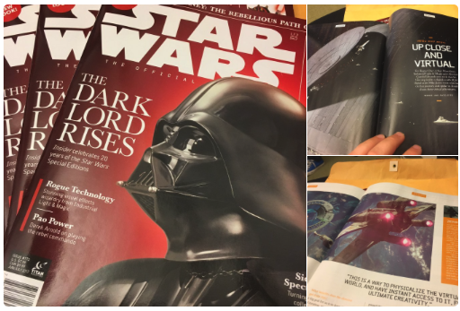
Nightline
'Rogue One' Cast, Filmmakers on Movie's Epic Battles, Special Effects
A segment on ABC News Nightline about the virtual production camera technology we created for Rogue One: A Star Wars Story.
Felicity Jones, Diego Luna, director Gareth Edwards and others on Darth Vader's return and the 'virtual camera' system bringing it to life.
ABC Nightline clip #2: more details on the spaceship model design and Virtual Camera workflows:
How Classic 'Star Wars' Spaceships Were Recreated for 'Rogue One,' 'Force Awakens'
Slashfilm
This ‘Rogue One’ Shot Was Created, Animated, Rendered & Released in Under a Week
The Verge
Rogue One’s best visual effects happened while the camera was rolling
How Gareth Edwards and visual effects supervisor John Knoll created the film’s docu-style action
FilmSchoolRejects
The Amazing Camera Technology Behind The Look of Rogue One
How old lenses and new digital environments helped Gareth Edwards change the visual language of Star Wars.
IndieWire
‘Rogue One’: How Gareth Edwards Made a Gritty ‘Star Wars’ Movie About Diversity
SyFy Wire
Rogue One: A Star Wars Story Battle of Scarif biggest moment was barely scripted
The Star Wars After Show (2016)
“We Love K-2SO, New Rogue One TV Spot, and More!”Chatting about how epic the new droid K-2SO is, and discussing motion capture for Rogue One with The Star Wars Show host Andi Gutierrez and some fellow Star Wars enthusiasts at Lucasfilm.
Batkid Begins documentary film interviews (2015)
See more details on the Side Projects: Batkid Begins page!Dana Nachman (Director, Batkid Begins), Patricia Wilson (CEO/Executive Director, Make-A-Wish Greater Bay Area) and I went on a press tour in New York City, Los Angeles and San Francisco in June, 2015 to help share the message of Batkid Begins -- what happens when people say ‘yes’ selflessly in the spirit of community service, and how the digital lives we live in can influence real world action.
Here are a section of our interviews and some articles about the efforts of Make-A-Wish, the Batkid wish team and the film.
- MTV News
- Variety
- LA Times
- WIRED
- Huffington Post
- Good Day LA
- WayTooIndie
- Guff
- ABC7
- Press Kit interview (filmed at Warner Bros. Studios Leavesden, UK)
Talks at Google
Collider.com
Video no longer available.
CTV Canada AM
Video no longer available.
FOX News.com
https://www.foxnews.com/video/4292408123001
Cinefex (2015)
Inspiring ILM: “Who or what inspired you to get into visual effects?”SFBatkid (2013)
- See more details on the Side Projects: SF Make-A-Wish Batkid page!
{kind=link}
Interviews:
- Metro
- @uwaterloo alumni e-newsletter (December 2013)
- KiSS 92.5 Radio interview with Roz & Mocha
- TEDx Blog (Plus: Extended Interview)
- + CBC News Network, Global BC News 1, CityNews Toronto, HLN TV, Rob Breakenridge Show
iMenurkey (2013)
Articles:cgchannel.com (2013)
Facial Animation performance for Dr. Hao Li’s Siggraph 2013 paper: “Realtime Facial Animation With On-the-fly Correctives”http://www.cgchannel.com/2013/05/videos-new-advances-in-markerless-facial-capture
University of Waterloo (2013)
Waterloo Math high school Euclid contest marketing material{kind=link}
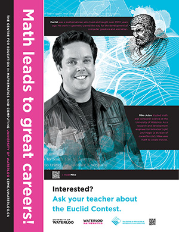
Waterloo Magazine (Fall 2012)
Advertisement for Waterloo Alumni Achievement Awardhttps://uwaterloo.ca/alumni/alumni-publications/waterloo-magazine
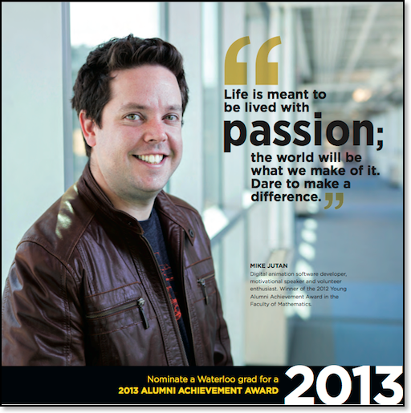
@uwaterloo alumni e-newsletter (December 2012)
Meet the 2012 Alumni Award winnershttp://alumni.uwaterloo.ca/alumni/e-newsletter/2012/dec/
San Francisco Film Society/The Art & Science of Lucasfilm (2012)
”We Build Cool Stuff: A Day in the Life of a Lucasfilm Software Designer”Classroom guide/course material following our talk at SFFS
http://www.sffs.org/assets/StudyGuide_sffs_classroom_LUCAS_webuildcoolstuff.pdf
Autodesk Maya MasterClass (2012)
“Developing artist-friendly pipelines using nested references at ILM”http://area.autodesk.com/masterclass_previews/preview_class1_q3_2012_mike_jutan
CNET TV Rumor Has It (2012)
Aired 8/22/2012. Interviewed for CNET TV’s Rumor Has It show about Apple TV Cable Box rumor (at 3:25).@uwaterloo alumni e-newsletter (January 2012)
Math Alumnus lives dream making Hollywood movie magichttp://alumni.uwaterloo.ca/alumni/e-newsletter/2012/jan/
/Film (2011)
Video of the Day: ILM’s Mike Jutan’s TED Talk on “The Power Of Enthusiasm”http://www.slashfilm.com/votd-ilms-mike-jutans-ted-talk-power-enthusiasm/
TEDx Talk (2011)
http://www.ted.com/tedx/events/2395
http://tedxtalks.ted.com/video/TEDxIB-York-Mike-Jutan-The-powe
J Weekly (2011)
Panel at JCC ponders spirituality vs. tech overload in iPad erahttp://www.jweekly.com/article/full/63756/panel-ponders-spirituality-vs.-tech-overload-in-ipad-era
iMenorah & iMenorah HD (2008-Current)
Apple Store: In-store displays (worldwide, 2009){kind=link}
{kind=link}
{kind=link}
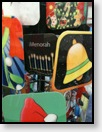
{kind=link}
{kind=link}
{kind=link}
Apple iTunes App Store: Featured Holiday App (2009)
{kind=link}
Articles:
• ZDNet
• JWeekly
• What’s on iPhone
• MacWorld
• CNET Crave
• Oy Bay!
• New York Times
• One of my favourites: An iMenorah holiday story to warm your heart
• New York Daily News (print): Fri. Nov 19th, 2010 "Your Home" section, page 8
Lucasfilm (2009)
The Star Wars Stories Project (Comic-Con/G4TV)http://www.g4tv.com/videos/39459/star-wars-comic-con-submission-example/
Ubisoft (2009)
Tom Clancy’s H.A.W.X. (Viral video campaign)Pixar Animation Studios (2006)
The Intern ExperienceQuoted: “Pixar is something MUCH more than just a job. It is much more than just a cool place to work. It is a place where you can live out your childhood dreams of storytelling and filmmaking, and know that your hard work is inspiring people of all ages, all over the world.”
http://www.pixar.com/careers/Intern-Life#Life1/career-detail/3642/career-internal/3658?ajax=2/1
Alias (2004)
Happy, Healthy Workplaces (Toronto)Waterloo Frosh Week (Sept 6, 2002)
{kind=link}
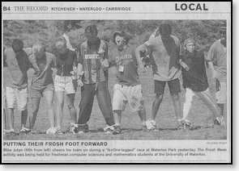
Harvey Norman (2001)
TV Ad (Newcastle, Australia)Kardinal Offishall concert (Spring 2001)
{kind=link}
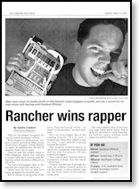
{kind=link}
Youth Entrepreneur Centre research (Aug 3, 1999)
{kind=link}
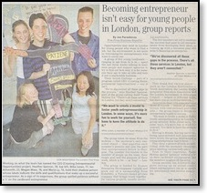
{kind=link}
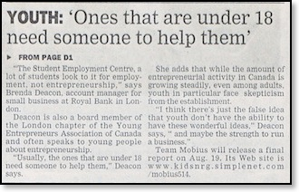
Toronto Computes (May 1999)
{kind=link}
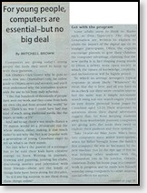
{kind=link}
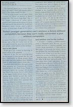
{kind=link}
Speaking to Business Leaders and Educators about my career goals and KidsNRG (Dec 18, 1998)
{kind=link}
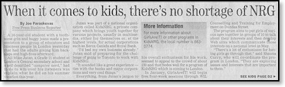
{kind=link}
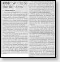
Full-page feature about my website (Sept 19, 1996)
{kind=link}
Orchard Park Public School website (1995)
{kind=link}
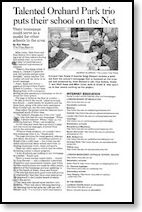